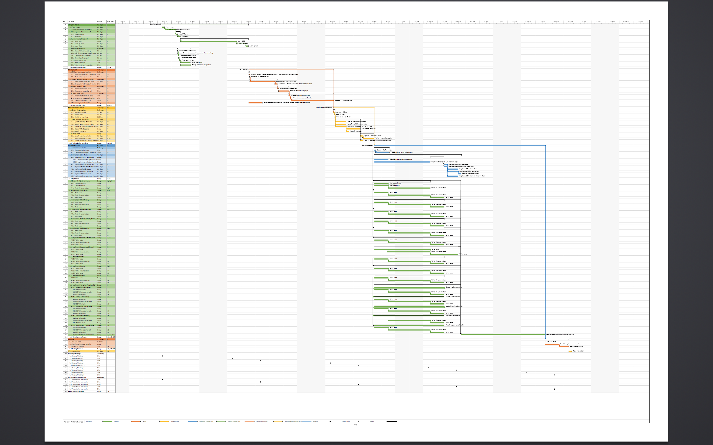

Google Ultron Dev Team
Presentation 5
Week 4
The only browser that works in Zero Gravity
What we did in the last week
Finished Our Project Plan
- Created a work breakdown structure
- The work breakdown structure became a simplistic network graph
- Fleshed out the network graph into a project timeline, with the aid of Microsoft Project
Project Plan Gantt
Our Project Plan
- Milestones and goals aligned to project deliverables
- Determined the critical path of the project
- Assigned project tasks to group members
- Group members tasked with researching specific areas, becoming "group experts"
Software Architecture
- Developed draft UML class diagram from work breakdown structure
- Simple, inheritance based model
- Factories for entity creation